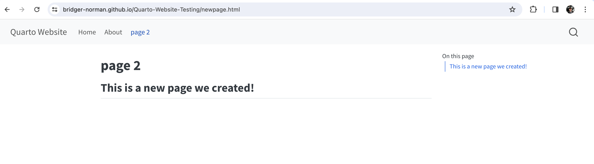

Lesson 03: Subpages and Nav Bars
Overview
This lesson will provide an overview of using subpages in Quarto and navigation options.
Learning Objectives
- Students will understand the purpose of subpages
- Students will understand the purpose of a Nav bar
- Students will be able to edit the website YAML
- Students will create a website with a nav bar and subpages
Lesson
Background
Having multiple pages and a way to navigate them allows the developer to separate content and ideas. This benefits the user with an organizational structure that is familiar. A navigation bar is a fundamental element of website design that plays a crucial role in helping users navigate, understand, and interact with the content and features of a site or application. By default your webiste will be built with a nav bar. This lesson will teach you how to add content and customize the nav bar.
Creating a New Page
Step one is to create a new .qmd document that will become our new page. This should be a review from Unit 2 Lesson 2. Make sure to add this file to your already existing website that you created in a previous lesson.
- Create a quarto file by clicking the new file icon at the top-left in VSCode or right-clicking in the folder and selecting new file. Give the page file a name and end with .qmd
- Add a title in the YAML and some markdown content underneath like such:
Linking the New Page to the YAML
Step two is changing our metadata file, by default this will be named _quarto.yml. This file is referred to as a YAML. A YAML is used to specify various settings and configurations related to the document’s formatting, layout, styling, and other properties.
Step three is to now render or preview your index.html file after everthing is connected and saved. This allows quarto to output the html files and all other supporting files that creates our website.
After these changes push your work to git hub as shown in 3 Lesson 2 and your website should update. You have now successfully connected your new page to the website! It should look something like this:

Now we will explore formatting options so you can customize your website to your personal preferences.
Formatting
Side Bar
If we want a side bar as opposed to a nav bar all we need to change is the navbar: to sidebar:. The style docked gives the navigation panel a gray background to seperate from the white page. You can remove this if you want it to blend with the page. Also not you need to specify the contents: for this code to work properly.
Sections
Lastly If you want a similar effect like menu with the nav bar you need to use section:. Notive you can give you section a title right after the section: code, my section is titled Pages. Note you can have multiple secitons which would be beneficial to seperate your content.
I recommend going to the Quarto website and seeing how you can turn the YAML parameters to continue to make your website personal.
More Details on navigation in quarto to be found here.
Note: If you want to change the colors of your web page look into changing the theme: element in your YAML
Practice Activity
Add a New Page to your Website
- Add a new Contact Page to your website.
- The qmd file should be ‘contact.qmd’.
- Add ‘Contact’ as the heading
- Do not forget to link to it in the YAML file
Your new page should look something like this :
Conclusion
With the ability to create subpages and the flexibility to design navigation interfaces, you are capable of building an organized website. Congratulations, with Quarto on your toolbelt you can build structured and useful websites that could benefit the lives of many!